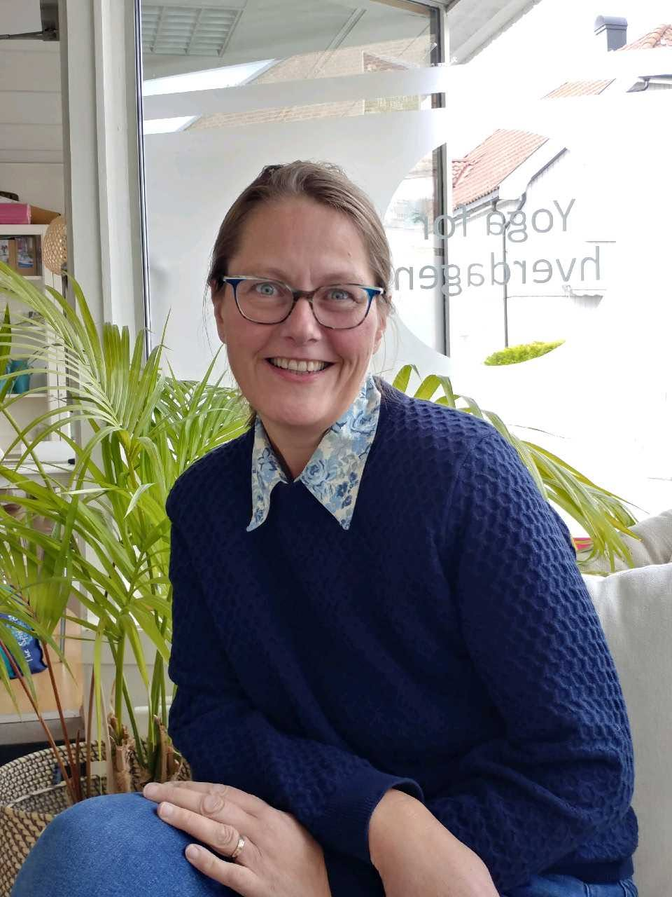

Mulighetsrommet Muskler og Ledd ligger i Ingvald Ludvigsens gate 14, 3027 Drammen. Her kan du senke skuldrene og få en behandling i rolige, trygge omgivelser.
Ta kontakt med Elin hvis du lurer på noe før timen, eller ønsker hjelp til å finne frem.
Se kontaktinformasjonStudioet er laget for at kroppen skal få roe seg. Her er det god tid, nærvær og en enkel ramme rundt behandlingen, uten unødvendig hastverk.
Du trenger ikke å prestere eller forklare alt. Elin starter med å lytte og tilpasser behandlingen etter hvordan du har det den dagen.
Elin Arnegard-Tveiten møter hver klient med ro, nysgjerrighet og respekt for at alle kropper er forskjellige. Hun bruker massasje og manuelle teknikker for å hjelpe deg med spenninger, bevegelse og restitusjon.
Behandlingen formes i dialog med deg, med fokus på trygghet, gode forklaringer og det som faktisk kan være nyttig for kroppen din.
Elin har bakgrunn som hjelpepleier, med videreutdanning innen habilitering, rehabilitering og kommunale helsetjenester. Massasjeutdanningen hennes startet med en østlig filosofi, før ønsket om større faglig tyngde førte henne videre til NOMAS Massasjeskole, en skole anbefalt av Norges Massasjeforbund. Hun er i dag under videreutdanning til massasjeterapeut og er også utdannet yogalærer innen Yin Yoga og Kundalini Yoga.

Behandlingen tar utgangspunkt i hvordan du har det. Ved behov kan vi se på muskulatur, styrke, svakheter, bevegelighet, restriksjoner og nervefunksjon, og snakke om skader eller plager du ønsker hjelp med. Elin tilpasser trykk og teknikker til deg, og kan veilede i enkle øvelser, trening og tøying.
Kropp og psykisk helse henger sammen. Her er det rom for å søke en helhetlig behandling, med oppmerksomhet på både fysisk komfort og ro i nervesystemet.
Massasje kan være et supplement for velvære og funksjon, men erstatter ikke undersøkelse eller behandling hos lege eller annet helsepersonell. Ved nye, sterke eller bekymringsfulle symptomer bør du kontakte helsepersonell.
NOMAS står for Norwegian Massage og er Norges Massasjeskole. Utdanningen omfatter klassisk, medisinsk, skade-, velvære- og idrettsmassasje. Den gir Elin et bredt repertoar av teknikker og et godt grunnlag i anatomi.